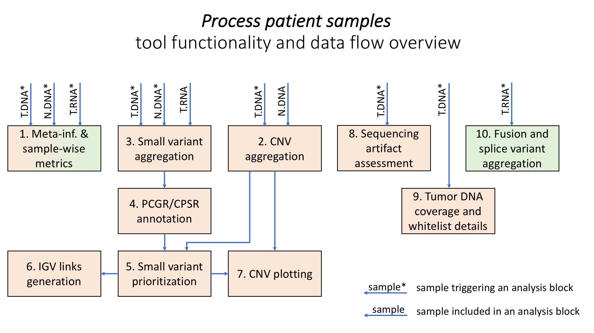

Sample data post-processing tool¶
About¶
Separate analysis pipelines are run by the LocalApp software for DNA and RNA samples, generating:
quality control (QC) metrics for both sample types;
fusion and splice variant output for RNA samples;
small variant output, copy number variant output (CNV) and microsatellite status (MS status) information for DNA samples.
However, LocalApp analyzes all samples independently, and no difference is made between tumor and normal DNA samples. The aims of the “process_patient_samples” TSOPPI tool are to:
integrate data generated for matched samples of a given patient (tumor DNA and/or normal DNA and/or tumor RNA);
aggregate information spread over multiple LocalApp output files, include information from external resources and tie together data available for the different variant types;
normalize and visualize CNV-related data;
annotate and prioritize small variants called by the LocalApp;
assist with sample QC, as well as variant QC and interpretation.
Notes regarding small variant terminology¶
Small variants passing all of LocalApp’s technical quality filters, such as coverage and support, are in the post-processing divided into 4 classes, which are being referred to throughout the TSOPPI output files:
BL: variants located within regions blacklisted in the LocalApp due to background noise levels;
GL_DB: variants present in LocalApp’s internal germline databases (i.e, having allele count ≥10 in any of LocalApp’s GnomAD exome, GnomAD genome and 1000 genomes database);
GL_P: variants assumed to be “germline by proximity” according to LocalApp (i.e., having allelic fractions similar to those of known germline variants present on the same chromosome);
SOM: the remaining variants (not having been filtered, these are assumed to be somatic).
TSO500 small variants include:
single nucleotide variants (SNVs): single-base substitutions;
multiple nucleotide variants (MNVs): block substitutions;
insertions/deletions (INDELs) of limited size (up to about 25 bp).
Functionality overview¶
The tool’s functionality is broken down into multiple blocks, which are enabled/disabled based on the parameter settings and the combination of available patient samples (any combination of tumor DNA, normal DNA and tumor RNA samples is allowed on input).
Please note that some TSOPPI-generated files (especially intermediate outputs) are not listed in the Input files sections below.
1. Meta-information & sample-wise metrics¶
Enabled by default, triggered by all sample types.
Functionality: Creation of quality metrics plots for each input sample (these are intended for providing a quick sample-level QC overview and suitable for tumor board meeting presentations). Providing basic information about the samples included in the tool’s run.
Input files:
Each input sample’s related “[LocalApp_output_directory]/Results/MetricsOutput.tsv” file (located automatically, i.e., derived from the LocalApp_output_directory paths supplied via options “–dna_tumor_localapp_run_directory”, “–normal_localapp_run_directory” and “–rna_tumor_localapp_run_directory”).
Output files:
“[Sample_ID]_sample_QC_plot.png” file per input sample;
“[Sample_ID]_sample_QC_plot.pdf” file per input sample;
“sample_list.tsv” file with gathered sample-wise meta-information.
2. CNV aggregation¶
Enabled by default, triggered by tumor DNA sample, utilizing normal DNA sample when available.
Functionality: Aggregating CNV information from multiple LocalApp output files (per sample). Aggregating tumor DNA and normal DNA CNV data. Deriving gene-level CNV values from LocalApp-reported fold change (FC) values. Adjustment of FC and CNV values based on the tumor content estimate provided for the tumor DNA sample. Deriving of genome-wide coordinates for all reported chromosome-based location coordinates.
Input files:
“[LocalApp_output_directory]/Logs_Intermediates/CnvCaller/[sample_ID]/[sample_ID]_CopyNumberVariants.vcf” files for input DNA samples (located automatically);
“[LocalApp_output_directory]/Logs_Intermediates/CnvCaller/[sample_ID]/[sample_ID]_normalizedBinCount.tsv” files for input DNA samples (located automatically);
“[LocalApp_output_directory]/Logs_Intermediates/CnvCaller/[sample_ID]/[sample_ID]_foldChange.tsv” files for input DNA samples (located automatically);
internal TSOPPI container resource: “/inpred/resources/centromere_data/hg19_chromosome_sizes.tsv”;
internal TSOPPI container resource: “/inpred/resources/PAR_genes.tsv”.
Output files:
“[tumor_DNA_sample_ID]_merged_CNV_data.tsv” - all of available CNV-related information (on sub-gene level) gathered into a single file;
“[tumor_DNA_sample_ID]_merged_CNV_summary_FC_sorted.tsv” - gene-level CNV information summary, sorted by FC values;
“[tumor_DNA_sample_ID]_merged_CNV_summary_location_sorted.tsv” - gene-level CNV information summary, sorted by genome-wide gene start positions.
3. Small variant aggregation¶
Enabled by default, triggered by tumor DNA sample, utilizing all available samples.
Functionality: Aggregating small variant information from multiple LocalApp output files (per sample). Aggregating tumor DNA and normal DNA small variant data, investigating the support for tumor DNA variants in the tumor RNA sample. Creating small variant overview tables and allelic fraction histograms/scatter plots. Calculating tumor DNA/normal DNA and tumor DNA/tumor RNA sample concordance based on known germline variant support. Creating PCGR-/CPRS-ready VCF files. Creating a mutational signature plot (plotting variant counts for all possible substitution types and their and 3-bp genomic contexts; not a mutational signature decomposition analysis).
Input files:
“[LocalApp_output_directory]/Logs_Intermediates/VariantMatching/[sample_ID]/[sample_ID]_MergedSmallVariants.genome.vcf” files for input DNA samples (located automatically);
“[LocalApp_output_directory]/Logs_Intermediates/Tmb/[sample_ID]/[sample_ID]_TMB_Trace.tsv” file for input tumor DNA sample (located automatically);
“[LocalApp_output_directory]/Logs_Intermediates/RnaMarkDuplicates/[sample_ID]/[sample_ID].bam” file for input tumor RNA sample (located automatically);
a reference fasta file supplied via the –reference_fasta_file option.
Output files:
“[tumor_DNA_sample_ID]_small_variant_AF_plots.pdf” - allelic fraction (AF) distribution plots for the individual classes of small variants (BL, GL_DB, GL_P, SOM) - scatter plots of normal DNA sample is available, histograms otherwise;
“[tumor_DNA_sample_ID]_sample_concordance.tsv” - tumor DNA/normal DNA and tumor DNA/tumor RNA sample concordances based on small variant presence and AF values - format details and variant inclusion criteria are listed in the file header;
“[tumor_DNA_sample_ID]_small_variant_overview_by_type.tsv” - a breakdown of variant counts by class and type (SNVs, MNVs, INDELs);
“[tumor_DNA_sample_ID]_small_variants_all.vcf” - a PCGR-/CPSR-ready VCF file including all small variants classified as BL, GL_DB, GL_P or SOM;
“[tumor_DNA_sample_ID]_small_variants_somatic.vcf” - a PCGR-/CPSR-ready VCF file with likely somatic variants (if a normal DNA sample is available, this encompasses all variants with tumor DNA sample AF at least 5 times higher than the normal DNA sample AF; if a normal DNA sample is not available, all SOM class variants are included instead);
“[tumor_DNA_sample_ID]_joint_mutational_signature.pdf” (as described in the functionality paragraph above).
Additional notes:
When available, the tumor RNA sample will be checked for support of small variants called in the tumor DNA sample. As of TSOPPI v0.3, it is not checked whether locations of the individual variants are covered by the TSO500 RNA assay.
As a consequence of different read mapping software being used for the DNA and RNA samples, some variants (especially complex variants and INDELs in certain genomic areas) might be reported differently for DNA and RNA samples (even despite variant format normalization included in TSOPPI). It is thus strongly recommended to manually check the RNA support of all critically important small variants.
4. PCGR/CPSR annotation¶
Enabled by default, triggered by tumor DNA sample, utilizing available DNA samples.
Functionality: Annotation of all BL, GL_DB, GL_P and SOM variants found in the DNA tumor sample with information necessary for interpretation in precision medicine setting. Annotation of non-reference variants with regard to cancer predisposition (run on normal DNA sample data when available, and on tumor DNA sample data otherwise). (Please refer to the official PCGR/CPSR resources for details regarding the software’s implementation and functionality.)
Input files:
“[tumor_DNA_sample_ID]_small_variants_all.vcf”, “[tumor_DNA_sample_ID]_small_variants_somatic.vcf” and an intermediate CPSR-ready non-reference variant VCF file, all generated during the small variant aggregation step as described above.
Output files:
Directory “[tumor_DNA_sample_ID]_PCGR_0.9.1_all” - PCGR annotation output for all BL, GL_DB, GL_P and SOM variants found in the tumor DNA sample; generated with options “–show_noncoding”, “–assay TARGETED”, “–include_trials”;
Directory “[tumor_DNA_sample_ID]_PCGR_0.9.1_somatic” - PCGR annotation output for variants present in file “[tumor_DNA_sample_ID]_small_variants_somatic.vcf” (see the 3. Small variant aggregation section above for details); generated with options “–show_noncoding”, “–assay TARGETED”, “–include_trials”;
Directory “[tumor_DNA_sample_ID]_PCGR_0.9.1_mutational_signatures” - PCGR annotation output for variants present in file “[tumor_DNA_sample_ID]_small_variants_somatic.vcf”, with an additional mutational signature analysis enabled (only executed if the input file contains >= 100 SNVs); generated with options “–show_noncoding”, “–assay WES”, “–include_trials”, “–estimate_signatures”, “–min_mutations_signatures 100”, “–all_reference_signatures”, “–include_artefact_signatures”;
Directory “[tumor_DNA_sample_ID]_CPSR_0.6.1_all_tumor_variants” (or “[normal_sample_ID]_CPSR_1.0.0_all_normal_variants”) run on all non-reference variants passing basic quality filters that were reported for the tumor DNA sample (or the normal DNA sample, if available); generated with options “–panel_id 0”, “–secondary_findings”, “–classify_all”, “–gwas_findings”.
5. Small variant prioritization¶
Enabled by default, triggered by tumor DNA sample, utilizing all available samples.
Functionality: Selection of small variants potentially relevant for cancer diagnostics and treatment. Integration of LocalApp and PCGR/CPSR annotation resources with other information (InPreD small variant recurrence data, CN values and FoundationOne Liquid CDx targets).
Input files:
“[LocalApp_output_directory]/Logs_Intermediates/Annotation/[sample_ID]/[sample_ID]_SmallVariants_Annotated.json.gz” file for input tumor DNA sample (located automatically);
“*.pcgr_acmg.grch37.snvs_indels.tiers.tsv” and “*.pcgr_acmg.grch37.pass.tsv.gz” files from the “[tumor_DNA_sample_ID]_PCGR_0.9.1_all” directory generated by PCGR (see the 4. PCGR/CPSR annotation section for details);
“*.cpsr.grch37.snvs_indels.tiers.tsv” and “*.cpsr.grch37.pass.tsv.gz” files from the CPSR output directory (see the 4. PCGR/CPSR annotation section for details);
A range of files generated by TSOPPI in previous analysis steps, particularly outputs related to small variants and CNVs.
internal TSOPPI container resource: “/inpred/resources/F1LCDx_genes.tsv”;
internal TSOPPI container resource: “/inpred/resources/blacklisted_variants.tsv”;
(optional) variant recurrence table generated by the variant recurrence table update tool.
Output files:
“[tumor_DNA_sample_ID]_small_variant_table.tsv” - aggregated information about small variants with potential relevance for cancer diagnostics and treatment (please see the file header for details regarding the output format and variant inclusion criteria);
“[tumor_DNA_sample_ID]_small_variant_table_blacklisted.tsv” - aggregated information about small variants that fulfill criteria for inclusion in the “[tumor_DNA_sample_ID]_small_variant_table.tsv” file, but which are observed too often to be relevant (please see the notes below);
“[tumor_DNA_sample_ID]_predisposition_gene_variant_table_*.tsv” - an overview of small variants located within cancer predisposition genes defined in a dedicated ESMO paper;
“[tumor_DNA_sample_ID]_small_variant_overview_by_tier.tsv” - a breakdown of variant counts by class and PCGR-reported ACMG/AMP-based tier.
Additional notes:
An internal TSOPPI file (/inpred/resources/blacklisted_variants.tsv) decides by default which variants will be redirected to the blacklist variant table output. This file currently lists only variants appearing with >= 35 % VAF support in at least 50 % of OUS-investigated InPreD tumor samples (when only considering samples in which the variant position is callable).
An own blacklist definition file can be supplied via this tool’s parameter “–inpred_small_variant_blacklist”. Values in the first column of non-commented lines in the supplied blacklist definition file will be interpreted as variant IDs in format “chromosome:position:reference_allele>alternative_allele” (using 1-based positions, e.g. “8:145738767:CG>C”); any additional columns will be ignored during the processing.
Much of the information provided in the output variant tables is tied to primary Ensembl transcripts, which are determined for individual variants by VEP during the PCGR/CPSR annotation. Information about variants’ notable protein coding consequences in other transcripts (whether Ensembl or RefSeq), as reported by LocalApp’s Nirvana, can be found in the “Coding_transcript_consequences” column of the two “*small_variant_table*” output files.
6. IGV-links generation¶
Enabled by default, triggered by tumor DNA sample, utilizing all available samples.
Functionality: Creation of HTML files simplifying variant QC in IGV by single-click BAM file loading and variant loci hopping. Own variant files are created for each user specified via the “–port_number_labels” parameter, allowing for parallel use by multiple users on the same machine (reserving a different IGV communication port for each user).
Input files:
“*.pcgr_acmg.grch37.snvs_indels.tiers.tsv” file from the “[tumor_DNA_sample_ID]_PCGR_0.9.1_all” directory generated by PCGR (see the 4. PCGR/CPSR annotation section for details);
TSOPPI-generated “[tumor_DNA_sample_ID]_small_variant_table.tsv” file (described above).
Output files:
A set of “[tumor_DNA_sample_ID]_IGV_links_all_variants.port_[Number]_[Label].html” files generated for all port Number and Label value pairs determined by the “–initial_port_number” and “–port_number_labels” tool parameters. IGV links for all BL, GL_DB, GL_P and SOM variants are included in this output file.
A set of “[tumor_DNA_sample_ID]_IGV_links_interpretation_table_variants.port_[Number]_[Label].html” files generated for all port Number and Label value pairs determined by the “–initial_port_number” and “–port_number_labels” tool parameters. Only IGV links for variants present in the “[tumor_DNA_sample_ID]_small_variant_table.tsv” file are included in this output.
Additional notes:
Besides HTML links that allow directly jumping into genomic loci of the individual variants within IGV, all output files also provide links for IGV session initialization/reset and for loading of relevant patient bam files. The tool parameter “–igv_session_file [path]” needs to be supplied in order to specify path to a standard IGV session file. Paths to the following BAM files are automatically determined and included:
“[LocalApp_output_directory]/Logs_Intermediates/StitchedRealigned/[sample_ID]/[sample_ID].bam” file paths for input DNA samples (these are the files on which small variant calling is performed by the LocalApp);
“[LocalApp_output_directory]/Logs_Intermediates/DnaRealignment/[sample_ID]/[sample_ID].bam” file paths for input DNA samples (these are BAM files with separate R1 and R2 sequences);
“[LocalApp_output_directory]/Logs_Intermediates/RnaMarkDuplicates/[sample_ID]/[sample_ID].bam” file for input tumor RNA sample.
7. CNV plotting¶
Enabled by default, triggered by tumor DNA sample, utilizing all available samples.
Functionality: Creation of plots aimed for helping with copy number change interpretation. Gene-wise CNVs and variant AFs plotted on gene, chromosome and sample level.
Input files:
TSOPPI-generated file “[tumor_DNA_sample_ID]_merged_CNV_data.tsv” (see the 2. CNV aggregation section for details);
internal TSOPPI container resource: “/inpred/resources/centromere_data/hg19_chromosome_sizes.tsv”;
internal TSOPPI container resource: “/inpred/resources/merged_normal_sample_CNV_data.tsv”;
internal TSOPPI container resource: “/inpred/resources/PAR_genes.tsv”.
Output files:
“[tumor_DNA_sample_ID]_CNV_overview_plots.pdf” - CNV plots on sample/genome and chromosome level, including variant AF plots and gene CNV plots for the available samples;
“[tumor_DNA_sample_ID]_CNV_distribution_plots.pdf” - gene-level plots showing CN values observed in the available DNA samples in the context of a CN value distribution within a group of unrelated normal samples.
Additional notes:
The *CNV_overview_plots.pdf document is divided into four sections, with the plots within each section being marked by unique title prefixes (“[An]”, “[Bn]”, “[Cn]”, “[Dna]”/”[Dnb]”). Depending on whether normal DNA and/or tumor RNA samples are included in the analysis, some plots might not be generated. Specific page numbers might therefore show different plot types for different patients. A given title prefix will however always mark the same plot type.
Please note that the “[C3]”-prefixed plot is different from the remaining “[Cn]” plots: the x-axis value on this plot represents the variant order rather than genomic position. The relative width of each chromosome on the “C3”-plot is thus determined by per-chromosome variant counts rather than chromosome lengths. This plot should allow for better visual evaluation of possible contamination issues (variant clusters forming vertical bars on other “Cn” plots should be stretched out into larger areas on this plot, potentially revealing breakpoints with visible AFs jumps).
The *CNV_distribution_plots.pdf document shows for each gene what its CN value distribution is in normal samples (i.e., samples in which frequent CN changes are not expected), both before and after adjustment to the tumor content value estimated for given tumor DNA sample. It can help answer the following questions:
Does the LocalApp tend to systematically over- or under-estimate the CN value for given gene?
How wide/narrow is the CN value distribution for given gene?
A certain CN value might be a clear outlier for one gene, while being well within the expected “normal” range for another gene. The displayed percentile information should provide an objective measure of how (un)likely a given CN value that was observed in a patient’s DNA sample is to be observed in (mostly) CN-neutral samples.
8. Sequencing artifact assessment¶
Disabled by default, triggered by tumor DNA sample if the “–enable_CSAM_check” option is set to “True”, utilizing only the DNA tumor sample.
Functionality: Utilizing the Picard tools (v2.26.2) to determine the presence of sequencing artifacts (oxidation and/or deamination in particular).
Input files:
“[LocalApp_output_directory]/Logs_Intermediates/DnaRealignment/[sample_ID]/[sample_ID].bam” file for tumor DNA sample (located automatically);
a reference fasta file supplied via the –reference_fasta_file option.
Output files:
“[tumor_DNA_sample_ID]_sequencing_artifact_summary_metrics.tsv” - summary of the sequencing metrics calculation output.
Additional notes:
Picard tools AddOrReplaceReadGroups and CollectSequencingArtifactMetrics are utilized during this step. The analysis is performed on tumor DNA BAM file without read stitching (separate R1 and R2 reads are investigated).
The complete output of this analysis can be found in tool’s results sub-directory “TMP/CSAM_FILES” if the parameter “–remove_temporary_files” is set to “False”.
9. Tumor DNA coverage and whitelist details¶
Enabled by default, triggered by tumor DNA sample, utilizing only the tumor DNA sample.
Functionality: Creation of textual and graphical output detailing tumor DNA sample coverage statistics at basepair, target, gene and sample resolutions. Assembling additional information about genes and loci especially relevant for currently available targeted treatment options in InPreD.
Input files:
“[LocalApp_output_directory]/Logs_Intermediates/VariantMatching/[sample_ID]/[sample_ID]_MergedSmallVariants.genome.vcf” file for input tumor DNA sample (located automatically);
internal TSOPPI container resource: “/inpred/resources/exon_targets/TSO500_exon_targets.bed”;
internal TSOPPI container resource: “/inpred/resources/whitelist_data/whitelist_gene_regions.txt”.
internal TSOPPI container resource: “/inpred/resources/whitelist_data/whitelist_transvar_processed.tsv”;
Output files:
“[tumor_DNA_sample_ID]_coverage_details.tsv.gz” - coverage statistics for exonic regions targeted by the TSO500 DNA assay (on basepair, target and gene level);
“[tumor_DNA_sample_ID]_coverage_histogram.tsv” - coverage histogram details for exonic regions targeted by the TSO500 DNA assay (providing information about the proportion of targeted areas with coverage >= X and <= X for all values of X relevant for the input DNA tumor sample);
“[tumor_DNA_sample_ID]_coverage_plots.pdf” - graphical representation of selected information available in the *coverage_details.tsv.gz and *coverage_histogram.tsv files;
“[tumor_DNA_sample_ID]_whitelist_details.tsv” - coverage and allele information for loci/variants and genes deemed relevant for targeted treatment options in InPreD.
Additional notes:
The processed coverage statistics values are extracted from LocalApp’s VCF file that reports coverage values and allelic composition for all assay-targeted bases, regardless of presence/absence of reportable small variant findings. The reported values should be understood as “coverage usable for LocalApp small varint calling” rather than total available coverage.
10. Fusion and splice variant aggregation¶
Enabled by default, triggered by tumor RNA sample, utilizing only the tumor RNA sample.
Functionality: Aggregation of fusion and splice variant output generated by the LocalApp. Reformatting into a table directly usable during quality control of these variants.
Input files:
“[LocalApp_output_directory]/Logs_Intermediates/RnaFusionMerge/[sample_ID]/[sample_ID]_AllFusions.csv” - file for tumor RNA sample (located automatically);
“[LocalApp_output_directory]/Logs_Intermediates/RnaSpliceVariantCalling/[sample_ID]/[sample_ID].tsv” - file for tumor RNA sample (located automatically).
Output files:
“[tumor_RNA_sample_ID]_fusion_and_splice_variant_candidates.tsv” - aggregated fusion and splice variant output (please see the file header for format details).
Additional notes:
LocalApp’s final fusion variant results are generated by merging ‘filtered’ ‘Manta’ caller output with the output of the ‘SpliceGirl’ caller. The latter caller generates splice variant calls as well, and it is sometimes questionable whether a given variant candidate should be interpreted as a fusion or rather as a splice variant.
The aggregated information generated by TSOPPI allows for re-classification of the individual variants and/or for adjustment of their breakpoints. Values within field/column names prefixed with “Provisional_” are meant to be checked; the corrected/final values can then be stored in corresponding “partner fields” without the “Provisional_” prefix.
Please note that the number of splice and fusion variant per sample is highly variable. Detailed manual QC of all variant candidates might in some cases not be feasible.
IGV link files for fusion and splice variants are currently not generated by TSOPPI.
Running the tool¶
Command line options:
process_patient_samples.sh [options]
--help Prints this help message (the program exits).
Core path options:
--output_directory [opath] Required. Absolute path to the directory in which all of the output files should be stored. If not existing, the directory will be created. All existing files will be overwritten.
--reference_fasta_file [rff] Required. Absolute path to an indexed reference FASTA file (e.g., the LocalApp pipeline`s reference fasta file, which is located in '[LocalApp_directory]/resources/genomes/hg19_hardPAR/genome.fa').
--host_system_mounting_directory [hsmd] Required. Absolute path to the host system mounting directory; the specified directory should include all input and output file paths in its directory tree."
--container_mounting_directory [cmd] Optional. Container`s inner mounting point; the host system mounting directory path/prefix will be replaced by the container mounting directory path in all input and output file paths (the default value of "/inpred/data" likely shouldn`t be changed)."
Tumor DNA sample related options:
--dna_tumor_id [tid] Optional. ID of the tumor DNA sample, as used in the LocalApp output files. (default value: NA; setting this parameter to another value will enable all post-processing steps requiring tumor DNA data - parameters specifying the DNA tumor sample details therefore need to be set in that case).
--dna_tumor_pair_id [tpid] Optional. Required if the LocalApp pipeline was run with the "Pair_ID" value specified for the tumor DNA sample (in that case, use the same value as was used in the corresponding sample sheet).
--dna_tumor_output_id [did] Optional. Tumor DNA sample ID that will be used in the output files (if not provided, the supplied '--tumor_id' value will be used).
--dna_tumor_localapp_run_directory [rpath] Optional. Absolute path to main LocalApp output directory generated for the sequencing run with processed tumor DNA sample.
--dna_tumor_purity [tp] Optional. Estimated tumor purity (a value in range (0, 1]). If not supplied, default tumor purity value of 0.5 will be used.
--dna_tumor_site [ts] Optional. One of the tumor sites recognized by PCGR (denoted by integers in range [0, 30]). (default value: 0 [no tumor site specified])
Normal DNA sample related options:
--normal_id [nid] Optional. ID of the normal DNA sample, as used in the LocalApp output files. (default value: NA; setting this parameter to another value will enable post-processing of the tumor DNA sample together with a matched normal - parameters specifying the normal DNA sample details need to be set in that case).
--normal_pair_id [npid] Optional. Required if the LocalApp pipeline was run with the "Pair_ID" value specified for the normal sample (in that case, use the same value as was specified in the corresponding sample sheet).
--normal_output_id [bid] Optional. Normal sample ID that will be used in the output files (if not provided, the supplied '--normal_id' value will be used).
--normal_localapp_run_directory [npath] Optional. Absolute path to main LocalApp output directory generated for the sequencing run with processed normal sample. If not specified, value of parameter 'tumor_localapp_run_directory' will be used.
Tumor RNA sample related options:
--rna_tumor_id [rtid] Optional. ID of the matching RNA tumor sample, as used in the LocalApp output files. (default value: NA; setting this parameter to another value will enable all post-processing steps requiring RNA data - parameters specifying the tumor RNA sample details need to be set in that case).
--rna_tumor_pair_id [rtpid] Optional. Required if the LocalApp pipeline was run with the "Pair_ID" value specified for the matching RNA tumor sample (in that case, use the same value as was specified in the corresponding sample sheet).
--rna_tumor_output_id [ortid] Optional. RNA tumor sample ID that will be used in the output files (if not provided, the supplied '--rna_tumor_id' value will be used).
--rna_tumor_localapp_run_directory [rrd] Optional. Absolute path to main LocalApp output directory generated for the sequencing run with matching RNA tumor sample. If not specified, value of parameter 'tumor_localapp_run_directory' will be used.
Remaining input/output customization:
--initial_port_number [ipn] Optional. The lowest port number that will be utilized for execution of IGV commands; integers following the initial port number will be used if multiple port numbers are necessary (the total number of necessary ports will correspond to the number of labels in the supplied '--port_number_labels' parameter value). Use integers larger than zero. (default value: 60151)
--port_number_labels [pnl] Optional. String values that will be used to label the intended use/user of the individual port numbers. Muliple labels (separated by spaces and all together enclosed by quotes) can be supplied. (default value: "User1 User2")
--igv_session_file [isf] Optional. Path to an IGV session file that should be used for viewing the identified variants. If supplied, the path will be used as-is for IGV command html links creation (the resulting links are meant for outside-the-container use only). (no default value)
--enable_CSAM_check [True|False] Optional. Enable running of Picard Tools` CollectSequencingArtifactMetrics utility on the tumor DNA sample. (default value: False)
--variant_recurrence_table [vrt] Optional. Absolute path to a variant recurrence table generated by the "update_variant_recurrence_table" TSOPPI tool. If supplied, the output small variant interpretation table will include the recurrence information. (default value: "NA")
--localapp_version [lav] Optional. Version of the LocalApp pipeline that was used for generating the input of this tool. (default value: "2.2.0.12"; change to "2.0.1.4" when post-processing samples analyzed with an older LocalApp version)
--inpred_nomenclature [True|False] Optional. Set to "True" if the sample IDs follow InPreD nomenclature (all sample IDs are in format "PPPyyyy-Ann-Bpq-Cll"; please refer to the TSOPPI documentation for details). (default value: False)
--remove_temporary_files [True|False] Optional. A switch enabling/disabling removal of the "TMP" results sub-directory (located under the selected output directory) upon successful post-processing completion. (default value: True)
--inpred_gene_whitelist [igw] Optional. A list of genes for which coverage statistics will be generated. (default value: "NA" - an internal list will be used)
--inpred_small_variant_whitelist [isvw] Optional. A list of small variants for which coverage statistics will be generated. (default value: "NA" - an internal list will be used)
--inpred_small_variant_blacklist [isvb] Optional. A list of small variants which will not be deposited into the variant interpretation table, but instead into a separate blacklist table with the same format. (default value: "NA" - an internal list will be used)
Example invocation using the Docker image:
$ [sudo] docker run \
--rm \
-it \
-v /hs_prefix_path:/inpred/data \
inpred/tsoppi_main:v0.3 \
bash /inpred/user_scripts/process_patient_samples.sh \
--dna_tumor_purity 0.6 \
--dna_tumor_site 5 \
--dna_tumor_id tumor_DNA_A \
--dna_tumor_pair_id tumor_pair_DNA_A \
--dna_tumor_localapp_run_directory /hs_prefix_path/analysis/run1 \
--normal_id normal_A \
--normal_pair_id normal_pair_A \
--normal_localapp_run_directory /hs_prefix_path/analysis/run2 \
--rna_tumor_id tumor_RNA_A \
--rna_tumor_pair_id tumor_pair_RNA_A \
--rna_tumor_localapp_run_directory /hs_prefix_path/analysis/run3 \
--output_directory /hs_prefix_path/postprocessing/run1/patient_A \
--variant_recurrence_table /hs_prefix_path/postprocessing/variant_recurrence_table_[date].tsv \
--igv_session_file /hs_prefix_path/IGV_data/TSO500_session_file.xml \
--reference_fasta_file /hs_prefix_path/TSO_500_LocalApp_v2.2.0.12/resources/genomes/hg19_hardPAR/genome.fa \
--port_number_labels "Alice Bob" \
--host_system_mounting_directory /hs_prefix_path \
--enable_CSAM_check False \
--remove_temporary_files False \
--inpred_nomenclature True
Using IGV port commands¶
Depending on the values of parameters “–initial_port_number N” (default value: 60151) and “–port_number_labels ‘U1 U2 .. Um’” (default value: “User1 User2”), the process_patient_samples.sh tool creates sets of IGV command files (as described in the 6. IGV-links generation section) for the following user-port combinations:
user “U1”, port N;
user “U2”, port N+1;
user “Um”, port N+m-1.
The intention is to enable any combination of users to work simultaneously on the same machine without disturbing each other with IGV command triggers (as each user can reserve his/her own port for IGV use). The respective users need to start their own IGV instances with the option “–port=X”, where X is their dedicated port number. (IGV v.2.8.0 has been extensively tested with this feature.)
(last updated: 2022-03-10)